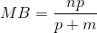
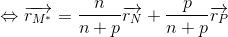
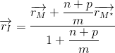
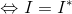

Teorema bisectoarei. Vectorul de poziţie al centrului cercului înscris într-un triunghi
Să ne amintim teorema bisectoarei, care spune că în triunghiul  , unde , cu , este bisectoarea interioară a unghiului , are loc relația:
, unde , cu , este bisectoarea interioară a unghiului , are loc relația:
.
Avem următoarea imagine:
.jpg)
Teorema bisectoarei are și o formă vectorială și anume, dacă facem următoarele notații:
,
,
,
atunci, avem relația:
.
Dacă  este un punct fixat și conform faptului că:
este un punct fixat și conform faptului că:
atunci vectorul de poziție al punctului se exprimă astfel:
.
Cu ajutorul acestei relații, ca să înțelegem cum se aplică ea în exerciții, vom demonstra că dacă în triunghiul ,  este centrul cercului înscris în triunghi, adică este punctul de concurență al bisectoarelor și are loc relația:
este centrul cercului înscris în triunghi, adică este punctul de concurență al bisectoarelor și are loc relația:
.
Avem figura de mai jos:

Din imagine observăm că bisectoarea unghiului este notată cu , cu , iar cea a unghiului cu , unde .
Folosim teorema bisectoarei scrisă fără vectori pentru bisectoarea astfel:


.
Pentru bisectoarea din triunghiul vom scrie relația din teorema bisetcoarelor astfel:
.
În această relație înlocuim  și  și obținem:
și obținem:
Dar, pentru că vectorii  și
și  sunt coliniari, putem să deducem ușor că:
sunt coliniari, putem să deducem ușor că:
.
Ne rezultă că:
.
Pentru a scrie relația prin care este exprimat vectorul de poziție al punctului din triunghiul , considerăm un punct fixat.
Atunci are loc relația:
.
Demonstrăm această relație:
.jpg)
În imaginea de mai sus putem observa că , și sunt bisectoarele unghiurilor  ,
,  , respectiv
, respectiv  , iar este punctul lor de intersecție.
, iar este punctul lor de intersecție.
Vom face următoarele notații:
,
,
.
Pentru că este bisectoare, ne rezultă:

.
Folosim relația pentru un punct care împarte un segment și obținem:
 .
Pentru bisectoarea din triunghiul vom scrie teorema bisectoarelor astfel:
.
Dar, din relația de la început notată cu , ne rezultă că:
.
Substituim această ultimă relație și obținem:
 .
.
Vectorul de poziție al punctului este:

.
Dar, cum:
,
ne rezultă că:
.
Observație:
Dacă presupunem că punctul de intersecție al bisectoarelor este , conform demonstrației de mai sus, ajungem la același rezultat.
Așadar, avem că:
 ,
ceea ce înseamnă că bisectoarele unui triunghi sunt concurente.